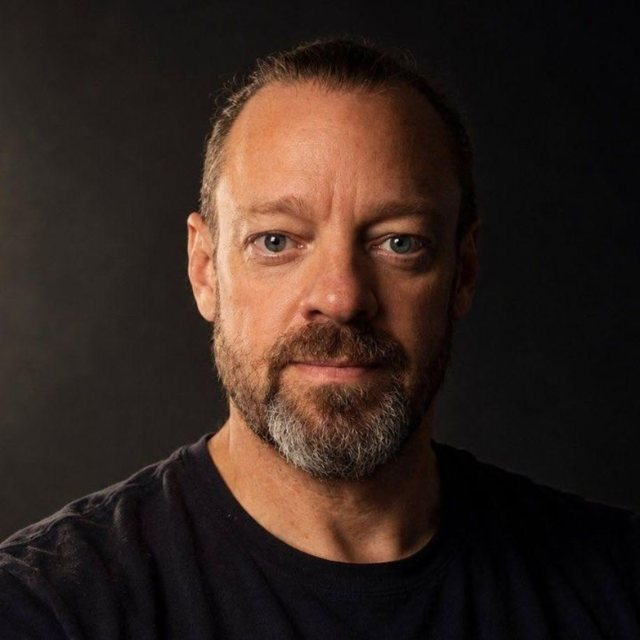
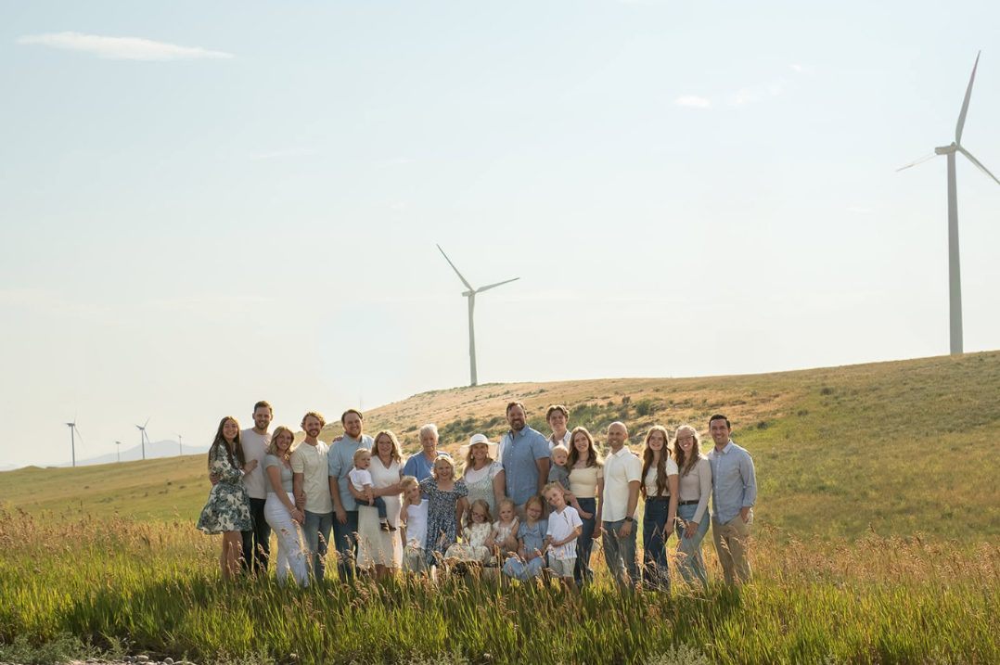
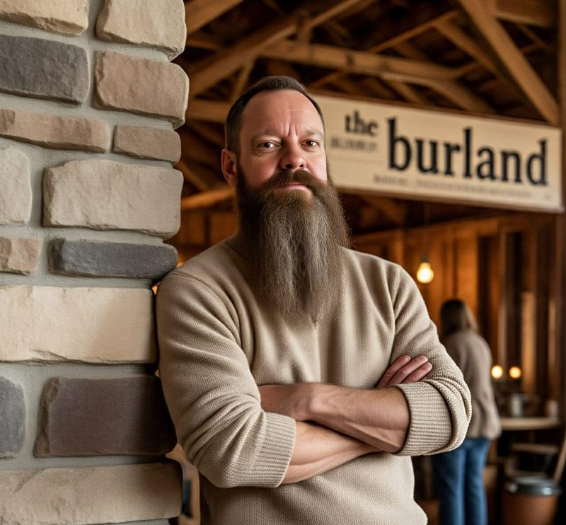
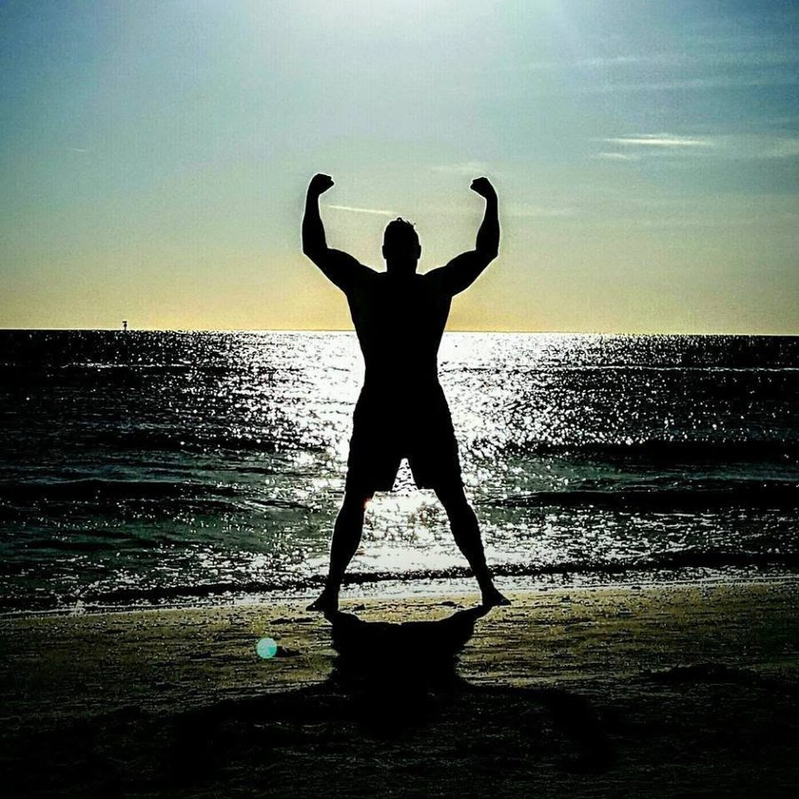
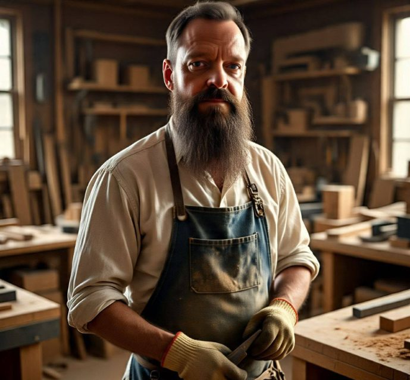
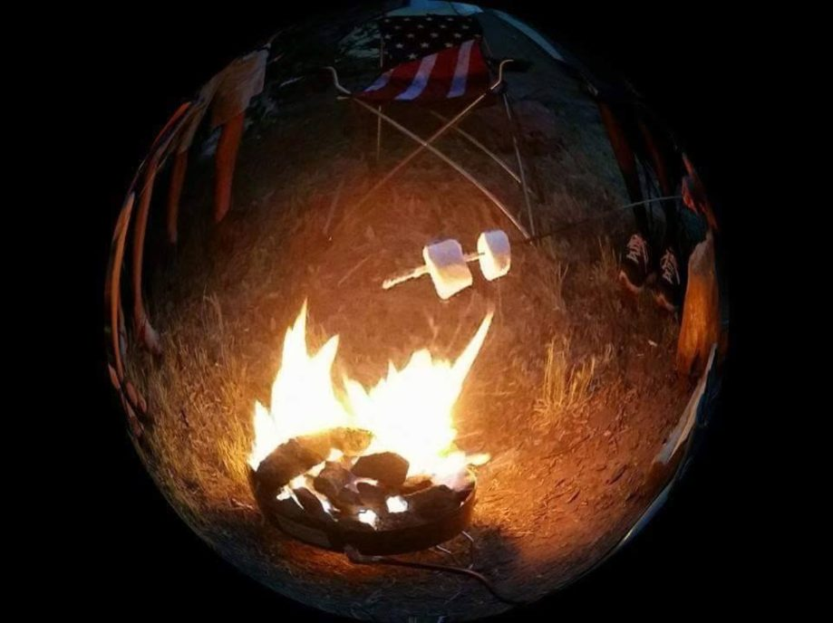

Class websites & games
Your course rebuilt as a quest, like doppsclass.com: XP, badges, an arcade, live class games and AI helpers your students actually want to use.
Free 20-minute call Start a conversationMy life is about my family. Teaching, coaching and building are things I do along the way.

My life is about my family. I'm a husband, a dad of seven and a grandpa, and the best things I've ever been part of are the people around our table. Everything else I do grows out of that.
For work, I've taught health at Thunder Ridge High School since 1997, and I coach javelin. On the side I'm restoring a 1912 event hall in St. Anthony and writing a book. Faith keeps all of it pointed the right way.

How faith and careful planning carry a family through the trials that look impossible from the inside.
What it takes to be a great parent, and how to raise kids who grow into capable, happy, successful adults.
Simple, practical ways to live as a good person, and how to pass that on to your children, students and community.
My health class rebuilt as a quest: chapter readers and podcasts, an arcade, XP and badges, and a Weight Control Quest where students survive on an island with 15 foods.
Live
A 1912 event venue in St. Anthony, Idaho, being brought back to life for weddings, reunions and community gatherings.
LiveA book in progress about the point within the circle: unity, multiplicity, absence and restoration, told through geometry and the Sierpiński triangle.
WritingAn Earth science course built like a survival game: 28 chapters across nine realms, from Spawn Point to Beyond Bedrock.
In the worksA living plan for our family's next ten years: paying off debt, building homes on shared land, and saving each option as it develops. For invited family members.
PrivateRelease angle ~35°
I coach javelin at Thunder Ridge and compete in masters track and field myself. Most of my training goes into sprint speed and jump height, because a long throw starts in the run-up.

High jump as a junior at South Fremont High School in St. Anthony. It's still in the state record book.
The best high school high jump in America that year, an ESPN spotlight, and a Simplot Games record. Still the South Fremont school record. Four Idaho state titles in all.
Three seasons at Ricks College (1990–1993) on a full scholarship: Region XVIII Most Valuable Athlete and a trip to nationals.
Two ankle surgeries ended the high jump at Idaho State, so I learned nine more events. Big Sky All-Conference, team captain and Most Valuable Athlete (1994–1996), then assistant coach on the 1997 Big Sky championship team.
Won the men's 50–54 high jump at the Huntsman World Senior Games in St. George, 33 years after being #1 in the nation. I also compete in the Idaho Senior Games and in Scottish Highland Games heavy events.
Your course rebuilt as a quest, like doppsclass.com: XP, badges, an arcade, live class games and AI helpers your students actually want to use.
Free 20-minute call Start a conversationFamily, parenting and being a good person, usually with my wife. Or for teachers and athletes: grit, comebacks, and gamifying a classroom.
Fees negotiable See topicsA one-of-a-kind song for someone you love or a team you're proud of, as heartfelt or as hilariously bad as you want it.
Made to order Request a songBring the whole family under one roof in our restored 1912 hall in St. Anthony. You rent the whole building, so you never share it with strangers.
From $800/night off-season · events from $200 Check dates

The triangle on the left is drawn from one simple rule repeated forever. It keeps gaining pieces while its area shrinks toward zero.
Let’s build
something good.